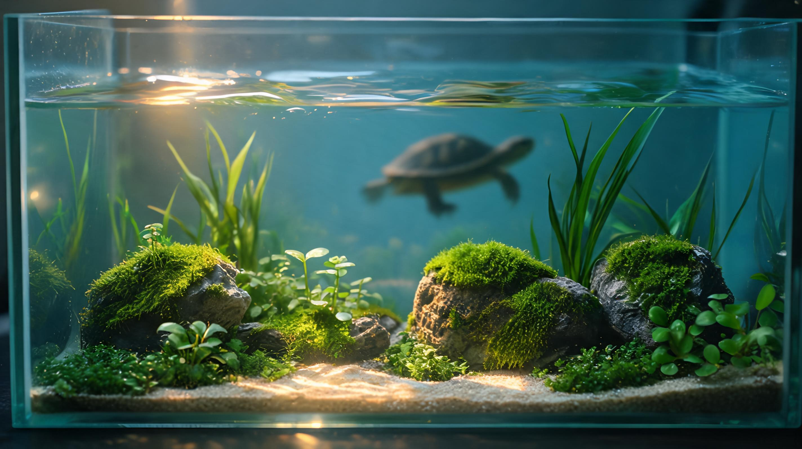

本期摇摇去参加黑客松，白豆和李墨玩迎来小欧和小别做客。开场第一件事不是正式分享，而是把豆摇峰的工作方式讲给嘉宾听：每个人先把周报写到文档里，会前互相评论，会上不再逐字复述，而是直接回答问题、展开讨论。
「我们一开始是每个人对着讲文档，每次都要花很多时间。后来改成先发文档、先评论，会上就不用完整讲了，回答问题就好，效率会高很多。」
这其实给本期定了一个底色：真正稀缺的不是把信息堆出来，而是把信息处理成别人能进入、能回应、能继续推进的状态。从复盘会到自媒体，从语音写作到 AI 工具，后面所有话题都在反复回到这件事。
李墨玩先从一个很具体的小问题讲起：为什么小红书标题限制得很短，而公众号标题可以写得更长？他的判断是，这不是单纯的字数设定，而是产品形态在倒推表达方式。
小欧和小别给了一个反向观察：从个人经验看，公众号里情绪类标题反而更容易被点开；小红书上真正有用的测评、教程、路线、操作指南，反而更容易变成搜索入口。
「小红书不只是流量平台，它离变现很近。你写的东西对别人有用，别人能发现它的价值，后面的转化就会来得很快。」
这让话题从“平台调性”进入了“内容价值”的判断：同样一份干货，放错接收姿势，就是干巴巴；放对接收姿势，才会变成别人愿意保存、搜索、转发甚至付费的东西。

聊到这里，本期最关键的一句话出现了。小欧和小别把“情绪价值”和“认知价值”并排放在一起：只有认知价值，内容太干；只有情绪价值，容易空。真正有效的表达，是把两者结合起来。
「你可以想怎么把你想说的东西包装到一个爆款话题里面去。不是说我们不想写干货，而是怎么把你的干货包装成别人愿意看的方式。那你就不是在写暴论了，你是在写你的干货。」
李墨玩接住了这件事：自媒体里很多时候不是观点不够正确，而是观点没有被放进一个足够有摩擦力的入口。比喻、类比、开头的反差、标题里的张力，本质上都是在帮内容获得第一次被接住的机会。
热点来了，做一个小工具蹭流量；某个新模型爆了，围绕它做信息差生意；短期需求出现，立刻打包服务去卖。李墨玩承认，自己不是不知道这些路子，甚至过去也踩过一些短期机会。
「跟着流量走，很多时候确实有办法赚快钱。但这个东西不长久，你还要算售后成本、风险成本、占用正事的时间。」
小欧和小别半开玩笑地说愿意去当售后，白豆则把问题补了一层：短期信息差如果处理不好，会把长期名声烧掉。大家最后落到一个更稳的判断上：真正值得做的，是找到可持续、投入产出比稳定、还能积累个人 IP 的事情。
这和小红书、公众号的讨论又接上了。平台上的每一次输出，不只是为了当下的一次阅读，而是在给未来的信任存一点点本金。
李墨玩最近在研究读书类账号怎么写。他刷到一些读书方法内容，发现最大的问题不是“没有知识”，而是没有亲身经验，像把材料拼在一起。
从罗素聊到向飙，几个人绕回同一个问题：为什么有些公共知识分子能被年轻人听进去？很大一部分原因，是他们不用学术黑话压人，而是会把复杂问题放回普通人能感知的生活半径里。
「他会用很多年轻人听得懂的话来跟我们沟通。学术水平很高，但不会只用学术术语去交流。」
这就是“把自己作为方法”的另一种理解：不是把自己包装成权威，而是从自己的眼睛、经历和问题出发，把知识重新翻译一遍。翻译得好，读书笔记才会从摘抄变成作品。
白豆这周重启了一个练习：设定几个问题，定一个 15 到 30 分钟的倒计时，不看屏幕，连续说。说的过程不是为了马上产出漂亮文章，而是为了让自己的思考显形。
必须张口说，身体会被拉进来。很多时候，一出声，状态就会比盯屏幕更主动。
能不能说出来、说得顺不顺、逻辑能不能被 AI 或别人检验，都会立刻暴露。
相比写作，语音更快，也更容易让“脑子里以为懂了”的东西接受一次现实测试。
小欧和小别的体感刚好相反：一说就容易过很久，因为要把一件事前因后果讲清楚，往往比想象中更费篇幅。
「你以为五分钟能说明白，但真要把前因后果说清楚，可能就是十五分钟、二十分钟。这样转成文字，字数根本不是问题。」
两种体验看似相反，其实指向同一件事：语音写作不是让表达更轻松，而是让表达更早暴露问题。
白豆展示了几个最近做的小东西：把题库 Word 变成可交互刷题网页，答错后直接调用模型解释；把设计作品集变成带互动的网页；把见面记录表可视化成“见面森林”。这些东西不是大平台，但都有一个共同特点：它们直接从一个具体人的具体麻烦出发。
「如果能做成一个网页，让别人上传 Word，就生成他自己的题库，那它对不同的人用处会更大，甚至可以卖钱。」
这句建议很关键。白豆原本展示的是“我把某个题库做出来了”，小欧和小别立刻把它推成了产品形态：“别人上传自己的材料，也能生成自己的工具”。这就是从作品到产品的转折点：不要只展示一次结果，要把结果背后的流程开放给更多人复用。
白豆把自己每次见朋友的记录丢给 AI 做可视化，结果生成了一个“见面森林”：人名、照片、时间、发生了什么，全部被串成一张可以点开的关系地图。
「年度总结的时候，它会很像给自己的一次回顾。你点一个人，就能看到相关照片、见过几次、当时做了什么。」
这里最有意思的不是“AI 会做网页”，而是一个很个人的记录系统突然被可视化之后，记忆从一条条表单，变成了能被重新漫游的空间。它和语音写作一样，都是把原本贴在身体里的经验，变成外部可操作的对象。
白豆还展示了两个一次性生成的视频：一个给朋友解释新城市，另一个解释 Agent 和 API。文案还有 AI 味，但声音、图片、剪辑和整体流程已经能一口气跑通。
「真正的变化不是 AI 替代你，而是你第一次能把想法直接推到结果。先做，结果再决定要不要学更多。」
这段话很适合作为本期的工具观：别先研究宏大系统，先找一件卡住你的烦事，让 Agent 帮你把步骤走完。当一个结果跑出来，你才知道自己到底需要学什么、补什么、封装什么。
聊到早上醒来第一件事，白豆说自己最近尽量不先看手机，而是闭着眼想几个问题，或者直接打开电脑。小欧和小别则把手机放在客厅，早上自然不会第一时间刷到。
白豆这周第一次认真使用附近的公共服务空间：有网、有插座、有水、有厕所，可以自习、排练、办活动。这个发现很小，但和语音写作一样，都是在调试自己的外部条件：有时候不是人不自律，是环境没有帮你进入状态。
临近尾声，话题又回到输出：豆摇峰做了几年，播客说了很久还没真正开始；小欧和小别做过两期播客，反而是分享“怎么做播客”的小红书笔记先火了。
「播客成本非常低，你现在都已经在语音输入了，把这些东西讲出来就好了。不顺的地方，事后剪掉就行。」
这给白豆的语音写作开了另一个出口：私下练习可以变成单口播客，也可以变成直播。先不要求完美，先让自己在镜头前、麦克风前、朋友面前持续出现。
豆摇峰本身也是这样。它不一定很快看到外部效果，但几年积累下来，每周固定出现、固定写、固定互相看见，就是一种长期资产。
最后白豆又展示了一个很实用的场景：线下活动结束后，工作人员要把现场照片、物料说明、报价单一一对应，做成汇报材料。以前这件事很耗人，容易错，也不显眼。
「繁琐的步骤被 AI 代替了。以前可能一两天的工作量，现在可以压缩到半个小时左右。」
这件事收束了本期暗线：真正好的 AI 应用，往往不是从概念里长出来，而是从一线工作人员重复到厌烦的步骤里长出来。研究 AI 的人不知道这些需求，做具体活的人又不知道 AI 能做到什么。豆摇峰这样的复盘会，正好在中间搭了一座桥。
先写、先读、先评论，会上才有空间做真正的讨论。复盘会不是汇报会，而是协作系统。
标题长度、内容形态、评论区气质，都在告诉你这个平台希望用户怎样接收信息。
干货太干，别人进不来；情绪太满，又留不下东西。好内容是两者的连接。
把干货包进比喻、类比、反差和问题里，是为了让别人先接住，再理解。
短期信息差不是不能做，但要计算售后、风险和声誉成本。个人 IP 更像复利。
说不出来、说不顺、逻辑绕，都是反馈。低成本暴露问题，比假装自己懂了更有用。
给自己做出一个题库网页是作品；让别人上传自己的 Word 生成题库，就是产品。
见面记录、照片、时间和人名被串成地图之后，记忆就从存档变成了可以漫游的材料。
不要先研究宏大概念。把最烦的小任务交给工具跑一遍，结果会告诉你下一步学什么。
早上不看手机、换一个公共空间、把手机放远，都是在降低进入状态的摩擦。
播客、直播、周复盘，本质都是让自己稳定出现。很多结果要等几年后才看得见。
一线工作人员天天做的笨活，往往就是最好的 AI 应用入口。先从那里找问题。
本期从平台标题聊到读书 IP，从语音写作聊到题库网页，从见面森林聊到活动物料核验，表面上很散，底层其实只有一个问题：你怎么把一个有用的东西，做成别人能接住的样子？
复盘文档要让朋友接住，内容标题要让平台用户接住，语音写作要让未来的自己接住，AI 工具要让真实用户接住。一旦被接住，它才会从“我做了一个东西”变成“这个东西能继续流动”。
干货不是终点，被接住才是开始。
— 白豆 × 李墨玩 × 小欧和小别，2026.06.15